physicalModeling
brass
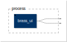
declare name "Brass";
declare description "Simple brass instrument physical model with physical parameters.";
declare license "MIT";
declare copyright "(c)Romain Michon, CCRMA (Stanford University), GRAME";
import("stdfaust.lib");
process = pm.brass_ui <: _,_;
brassMIDI
declare name "BrassMIDI";
declare description "Simple MIDI-controllable brass instrument physical model with physical parameters.";
declare license "MIT";
declare copyright "(c)Romain Michon, CCRMA (Stanford University), GRAME";
import("stdfaust.lib");
process = pm.brass_ui_MIDI <: _,_;
churchBell
declare name "ChurchBell";
declare description "Generic church bell physical model.";
declare license "MIT";
declare copyright "(c)Romain Michon, CCRMA (Stanford University), GRAME";
import("stdfaust.lib");
process = pm.churchBell_ui <: _,_;
clarinet
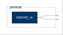
declare name "Clarinet";
declare description "Simple clarinet physical model with physical parameters.";
declare license "MIT";
declare copyright "(c)Romain Michon, CCRMA (Stanford University), GRAME";
import("stdfaust.lib");
process = pm.clarinet_ui <: _,_;
clarinetMIDI

declare name "ClarinetMIDI";
declare description "Simple MIDI-controllable clarinet physical model with physical parameters.";
declare license "MIT";
declare copyright "(c)Romain Michon, CCRMA (Stanford University), GRAME";
import("stdfaust.lib");
process = pm.clarinet_ui_MIDI <: _,_;
djembeMIDI
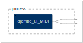
declare name "DjembeMIDI";
declare description "Simple MIDI-controllable djembe physical model.";
declare license "MIT";
declare copyright "(c)Romain Michon, CCRMA (Stanford University), GRAME";
import("stdfaust.lib");
process = pm.djembe_ui_MIDI <: _,_;
elecGuitarMIDI
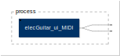
declare name "ElecGuitarMidi";
declare description "Simple electric guitar model without effect chain.";
declare license "MIT";
declare copyright "(c)Romain Michon, CCRMA (Stanford University), GRAME";
import("stdfaust.lib");
// TODO: We could potentially add an audio effect chain here
process = pm.elecGuitar_ui_MIDI <: _,_;
englishBell
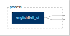
declare name "EnglishChurchBell";
declare description "English church bell physical model.";
declare license "MIT";
declare copyright "(c)Romain Michon, CCRMA (Stanford University), GRAME";
import("stdfaust.lib");
process = pm.englishBell_ui <: _,_;
flute
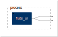
declare name "Flute";
declare description "Simple flute physical model with physical parameters.";
declare license "MIT";
declare copyright "(c)Romain Michon, CCRMA (Stanford University), GRAME";
import("stdfaust.lib");
process = pm.flute_ui <: _,_;
fluteMIDI
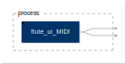
declare name "FluteMIDI";
declare description "Simple MIDI-controllable flute physical model with physical parameters.";
declare license "MIT";
declare copyright "(c)Romain Michon, CCRMA (Stanford University), GRAME";
import("stdfaust.lib");
process = pm.flute_ui_MIDI <: _,_;
frenchBell
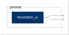
declare name "FrenchChurchBell";
declare description "French church bell physical model.";
declare license "MIT";
declare copyright "(c)Romain Michon, CCRMA (Stanford University), GRAME";
import("stdfaust.lib");
process = pm.frenchBell_ui <: _,_;
germanBell
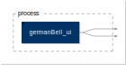
declare name "GermanChurchBell";
declare description "German church bell physical model.";
declare license "MIT";
declare copyright "(c)Romain Michon, CCRMA (Stanford University), GRAME";
import("stdfaust.lib");
process = pm.germanBell_ui <: _,_;
guitarMIDI
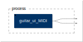
declare name "GuitarMidi";
declare description "Simple acoustic guitar model with steel strings.";
declare license "MIT";
declare copyright "(c)Romain Michon, CCRMA (Stanford University), GRAME";
import("stdfaust.lib");
process = pm.guitar_ui_MIDI <: _,_;
karplus
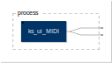
declare name "KarplusStrong";
declare description "Simple call of the Karplus-Strong model for the Faust physical modeling library";
declare license "MIT";
declare copyright "(c)Romain Michon, CCRMA (Stanford University), GRAME";
import("stdfaust.lib");
process = pm.ks_ui_MIDI <: _,_;
marimbaMIDI
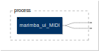
// WARNING: this model is incomplete and is only here for testing purposes
declare name "MarimbaMIDI";
declare description "Simple MIDI-controllable marimba physical model.";
declare license "MIT";
declare copyright "(c)Romain Michon, CCRMA (Stanford University), GRAME";
import("stdfaust.lib");
process = pm.marimba_ui_MIDI <: _,_;
modularInterpInstrMIDI
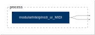
declare name "ModularInterpInstrMidi";
declare description "String instrument with a modular body";
declare license "MIT";
declare copyright "(c)Romain Michon & John Granzow, CCRMA (Stanford University), GRAME, University of Michigan";
import("stdfaust.lib");
process = pm.modularInterpInstr_ui_MIDI <: _,_;
nylonGuitarMIDI
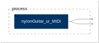
declare name "NylonGuitarMidi";
declare description "Simple acoustic guitar model with nylon strings.";
declare license "MIT";
declare copyright "(c)Romain Michon, CCRMA (Stanford University), GRAME";
import("stdfaust.lib");
process = pm.nylonGuitar_ui_MIDI <: _,_;
russianBell
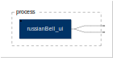
declare name "RussianChurchBell";
declare description "Russian church bell physical model.";
declare license "MIT";
declare copyright "(c)Romain Michon, CCRMA (Stanford University), GRAME";
import("stdfaust.lib");
process = pm.russianBell_ui <: _,_;
standardBell
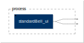
declare name "StandardChurchBell";
declare description "Standard church bell physical model.";
declare license "MIT";
declare copyright "(c)Romain Michon, CCRMA (Stanford University), GRAME";
import("stdfaust.lib");
process = pm.standardBell_ui <: _,_;
violin
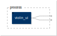
declare name "Violin";
declare description "Simple violin physical model controlled with continuous parameters.";
declare license "MIT";
declare copyright "(c)Romain Michon, CCRMA (Stanford University), GRAME";
import("stdfaust.lib");
process = pm.violin_ui <: _,_;
violinMIDI
declare name "ViolinMidi";
declare description "Simple MIDI-controllable violin physical model.";
declare license "MIT";
declare copyright "(c)Romain Michon, CCRMA (Stanford University), GRAME";
import("stdfaust.lib");
process = pm.violin_ui_MIDI <: _,_;
vocalBP
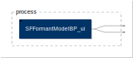
declare name "Vocal BandPass";
declare description "Simple source-filter vocal synthesizer.";
declare license "MIT";
declare copyright "(c)Romain Michon, CCRMA (Stanford University), GRAME";
import("stdfaust.lib");
process = pm.SFFormantModelBP_ui <: _,_;
vocalBPMIDI
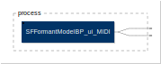
declare name "Vocal BandPass MIDI";
declare description "Simple MIDI-controllable source-filter vocal synthesizer.";
declare license "MIT";
declare copyright "(c)Romain Michon, CCRMA (Stanford University), GRAME";
import("stdfaust.lib");
process = pm.SFFormantModelBP_ui_MIDI <: _,_;
vocalFOF
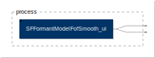
declare name "Vocal FOF";
declare description "FOF vocal synthesizer.";
declare license "MIT";
declare copyright "(c)Mike Olsen, CCRMA (Stanford University)";
import("stdfaust.lib");
process = pm.SFFormantModelFofSmooth_ui <: _,_;